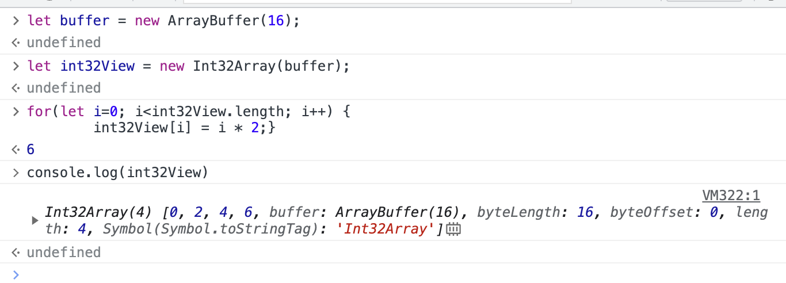

In the front-end developing, usually use the untyped Array. In order to deal with the large amount of vertex data in webgl introduced in ECMAScript 2015 type array.
The biggest effect of typed arrays to improve the perfformance of the array, the browser knows in advance the data type in the array, so it is more efficient to process. Js array internal implementation if the list, can dynamically increase and reduce the elements, but more elements, the performance will be poor, typed array management is a continuous memory area, know the starting position of this memory, you can through the position +N* offset (an addition a multiplication operation) access to the nth position of the elements. array, on the other hand, has to be search through a linked list one by one.
Typed Array split the implementation into buffers and views. The ArrayBuffer describes a piece of binary data in memory that has no format and provides no mechanism to access its contents. To access the memory contained in the cache object, you need to use views. Views can convert binary data into an actual typed array.
The buffer and view areas work as follows:
A buffer can be provided to multiple views for reading, different types of views to read the memory length is different, read out of the data format is different.
Let’s look at a simple example:
First, let’s create a 16-byte fixed-length buffer:
let buffer = new ArrayBuffer(16);The js code generates a 16-byte area of memory, each byte having a default value of 0. 1 Byte = 8 bit, 1 bit is a binary bit ( 0 or 1 ). That’s to say, the buffer is 16 * 8 bit, each binary bit is 0.
In order to read and write this buffer, we need to assign a view to it. There are two types of views, one is the TypedArray view, which includes a total of 9 types, and the other is the DataView view, which can customize the composite type
Here we create a view, that will format the data in the buffer as a 32-bit array of singed integers:
let int32View = new Int32Array(buffer);Now we can access the elements in this array just like a normal array
1
2
3
4for(let i=0; i<int32View.length; i++) {
int32View[i] = i * 2;
}
// This code fills the array with [0, 2, 4, 6]

If we create another view, this view format the data in buffer as a 16-bit array of singed integers:
1
2
3
4
5let int16View = new Int16Array(buffer);
for(let i=0; i<int16View.length; i++) {
console.log(int16View[i]);
}
// This code fills the array with [0, 0, 2, 0, 4, 0, 6, 0]
Then, guss what happens if we do this
1
2
3int16View[0]=32;
console.log('Entry 0 in the 32-bit array is now' + int32View[0]);
// It will be 32. Which means, both arrays arw views of the same data in different formats, which you can view using either view types
The purpose of data is different, the required precision and form are naturally different, such as the vertex index can use integers, according to the number of vertices can choose unit8、unit16 or unit32, the vertex position is generally used to represent the floating point number, the floating point number can choose different precision representation.